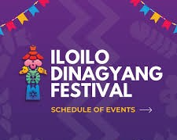

The 2026 Iloilo Dinagyang Festival highlights will take place from January 23-25, 2026, with the Opening Salvo held on January 10. The main weekend features the Dinagyang Ilomination on Friday, January 23, Kasadyahan sa Kabanwahanan on Saturday, January 24, and the Tribes Competition on Sunday, January 25.
The 2026 Dinagyang Schedule Highlights:
Jan 10: Opening Salvo
Jan 17: Miss Iloilo 2026 Coronation Night
Jan 22: Dinagyang Food Festival begins
Jan 23: Fluvial Procession and Solemn Foot Procession
Dinagyang Ilomination Streetdance Competition & Floats Parade of Lights
Jan 24: Kasadyahan sa Kabanwahanan (Cultural Competition)
Jan 25 (Main Festival Sunday):
6:00 AM: Concelebrated High Mass (San Jose Parish Placer)
8:00 AM 12:00 PM: Dinagyang Tribes Competition
3:00 PM: Sadsad Calle Real
7:00 PM: Awarding Ceremony
Venue and Event Notes:
Expanded Route: Performances will take place at the Iloilo Freedom Grandstand, Gaisano La Paz, and the Iloilo Sports Complex.
Tribes: Seven tribes, including Tribu Bulawanon sang Molo and Tribu Taga-Baryo, are competing.
Tickets: Tickets for major events started at 300.
Note: The schedule is based on announced major events for 2026 and may change depending on the Iloilo Festivals Foundation, Inc.
@2026 Dinagyang Festival Website
Press Here For More